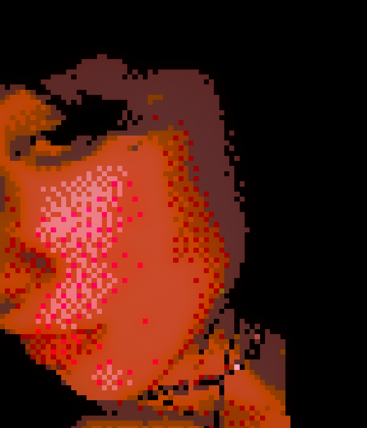

About VOID ✠
VOID is a Hub for all esoteric, spiritual, occult and human. It is made in order to help unite people who just like You, Me, Us, try to make sense of reality. The idea of VOID is the freedom of self, and a space for human authenticity and connection. Additionally, it also spreads awarness about spirituality and guidance on Your own 'spiritual' and self discovery journey, ina grounded way. We also stand for freedom of internet and knowledge. We see VOID as Open Source Human Mycelium.
You can find VOID on YouTube, PeerTube, Matrix and More.
About Creator 𓆩♡𓆪

Just another point of Love and Connection in grand scheme of existance. Passionate about multitude of things, my most pronounced interests lay in spirituality and esoterics. With over 8 years long journey into spirituality and community building, and reflection on trauma and existance. I have immense passion for energy reading and astrology, and provided countless professional and free of charge readings, including LIVE. Interested in everything I can gain practical skills on and DIY, including tech. I love making art and expressing myself. And other 1000 things I wouldnt be able to list here. I am profoundly maniac and love learning new things I can use. I am aware of digital corruption, thus most of my online presence exists outside of big corp platforms ! I love connecting to people deeply on personal level. I understand pain, and I understand Love, And I co-exist in both. TL;DR: I exist and I love.